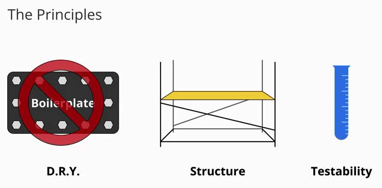
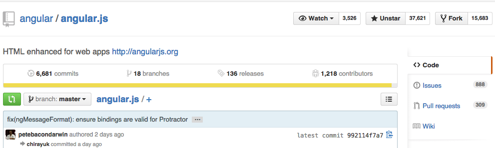
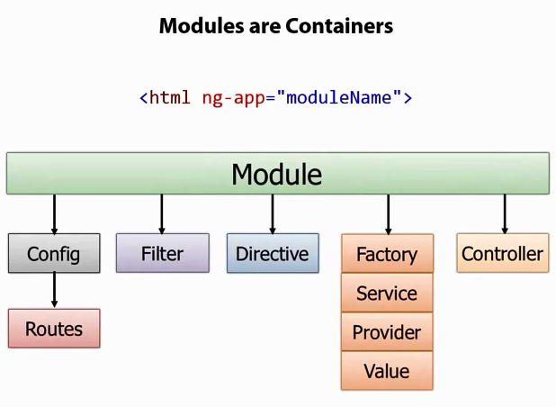

HTML enhanced for web apps!
Easy to build SPA Single Page App!
创建丰富的单页面应用
什么是AngularJS ?
全功能的Javascript 开源 前端框架
Design by Google
Developed in 2009 by Miško Hevery
Why Angular ?
为什么选择 Angular ?
传统网站架构
后端语言PHP + JS + Html
通常是后端语言"渲染HTML模板", 后端语言处理页面"URL路由请求"
如 PHP框架CodeIgniter或LaravelMVC 的View模板
Angular 设计原则

Angular 设计原则
VS Backbone
MVC or MVR
Router / Model & Collection / View
VS Backbone
Backbone View
var Bookmark = Backbone.View.extend({
template: _.template(…),
render: function() {
this.$el.html(this.template(this.model.attributes));
return this;
},
events: {
"dblclick" : "open",
"click .icon.doc" : "select"
},
open: function() {
window.open(this.model.get("viewer_url"));
},
select: function() {
this.model.set({selected: true});
}
});
VS Ember
App = Ember.Application.create();
App.Person = Ember.Object.extend({
firstName: null,
lastName: null,
fullName: function() {return this.get('firstName') + " " + this.get('lastName');
}.property('firstName', 'lastName')
});
App.IndexRoute = Ember.Route.extend({
model: function() {
var people = [ App.Person.create({firstName: "Tom",lastName: "Dale"}),
App.Person.create({firstName: "Yehuda",lastName: "Katz"}) ];
return people;
}
});
VS React
var CommentBox = React.createClass({
loadCommentsFromServer: function() {
$.ajax({ url: this.props.url, dataType: 'json',
success: function(data) { this.setState({data: data});}.bind(this),
error: function(xhr, status, err) { console.error(this.props.url, status, err.toString());}.bind(this)
});
},
getInitialState: function() { return {data: []};},
componentDidMount: function() { this.loadCommentsFromServer(); setInterval(this.loadCommentsFromServer, this.props.pollInterval); },
render: function() {
return (
Comments
MVR or MVVM or MOVE
MOVE，即 Models（模型）、Operations（操作）、Views（视图）、Events（事件）

Future of web frontend?
Will MDV become a standard?Shadow DOM and Polymer
Angular2 on ng-conf 2015
与其他库共同使用
AngularJS is a FrameworkAngularJS is a toolset for building the framework most suited to your application development.
It is fully extensible and works well with other libraries.
AngularJS: A Detailed Guide for Beginners
Angular 成熟度
经过五年的发展 框架成熟度高
Stable 1.3.15 / Unstable 1.4.0
Angular 入门容易
社区活跃
社区活跃 Github 关注排行

Google feedback 项目

Localytics 项目
Biggie Smalls曾说过：“代码越多，问题也就越多”。
Using AngularJS at Localytics Localytics 使用 AngularJS 经验 代替Backbone 代码减一半
Angular's 3D
Data Binding 数据绑定
Directive 指令与自定义指令 (组件)
Dependency Injection 依赖注入
Angular's MVC
Router, Modules
Views, Templates, Controller/Scope/ViewModel
Model, Factory Service Provider
Testing
Angular's Other Feature
- 内置jQuery Lite 语法的DOM操作
- Form and Validation 表单与验证
- Filters 模板过滤器
- 内置带Promise的AJAX $httli
- Animations 动画效果
- i18n 多语言和国际化
- Accessibility 针对特殊人群的无障碍浏览
- Angular API 1.3.15
Angular's 3D
Data Binding 数据绑定
- Let's Start. 官方最新 1.3.15
- Angular min 126k 未压缩版本是961k
- Demo1 数据绑定
- AngularJS WebInspector Extension for Chrome 调试插件 视频
- 关闭chrome的跨域安全限制. same origin policy
Data Binding 数据双向绑定

Data Binding 数据绑定

Angular's 3D
Directive 指令与自定义指令
AngularJS有一套完整的、可扩展的、用来帮助web应用开发的指令集
它使得HTML可以转变成“特定领域语言(DSL) Domain-Specific Language。
Angular's Directive 指令
“x-”，“data-”来让它符合html的验证规则。这里有以下可以用的指令名称例子：ng:bind, ng-bind, ng_bind, x-ng-bind , data-ng-bind
指令可以做为元素名，属性名，类名，或者注释。下面是一些等效调用myDir指令的例子：
Angular's 3D Directive 指令
Angular 表达式 expression
常用指令 : ngapp ngController ngClick ngCloak ngClass ngRepeat
{{item.name}}
{{item.name}}
{{item.name}}
{{item.name}}
Angular's Module 模块
html ng-app="myApp"
angular.module('MyApp',[]);
ngIf ngShow ngHide 指令
这里是AAA
这里是AAA
这里是BBB
这里是CCC
ngClick 点击事件
-
这里是AAA 没有任何ng指令
-
这里是AAA
-
这里是BBB
-
这里是CCC
ngClass 指令
- a string of space-delimited class names, 单一样式名称
- an array of class names 样式名称数组
- a map/object of class names to boolean values. 对象,应用多个样式
- The Many Ways To Use ngClass
ngClass 指令
-
这里是红色
-
这里是多个样式
-
这里是多个样式并带有条件
-
这里是CCC
ngRepeat 指令 循环
- $index – {number} – iterator offset of the repeated element (0..length-1)
- $first – {boolean} – true if the repeated element is first in the iterator.
- $last – {boolean} – true if the repeated element is last in the iterator.
- $middle – {boolean} – true if the repeated element is between the first and last in the iterator.
filter
Model Controller Scope ViewModel
ngRepeat 是如何工作的?
高级篇: 自定义指令 Directives (组件)
Angular world 与 非 Angular world
Modules

创建一个Modules

在Module中创建Controller

Angular's Router 前端路由
var demoApp = angular.module('demoapp', []);
demoApp.config(['$routeProvider', function($routeProvider) {
$routeProvider.
when('/phones', {templateUrl: 'partials/phone-list.html', controller: PhoneListCtrl}).
when('/phones/:phoneId', {templateUrl: 'partials/phone-detail.html', controller: PhoneDetailCtrl}).
otherwise({redirectTo: '/phones'});
}]);
Angular's 3D DI 依赖注入
Dependency Injection 依赖注入 中文文档
解决压缩代码变量名改变的问题
var MyController = function(renamed$scope, renamedGreeter) {
...
}
MyController.$inject = ['$scope', 'greeter'];
Angular's Factory
工场方法负责创建AngularJS中的大部分对象。比如指令，服务，过滤器。
angualar.module('myModule', []).
config(['depProvider', function(depProvider){
...
}]).
factory('serviceId', ['depService', function(depService) {
...
}]).
directive('directiveName', ['depService', function(depService) {
...
}]).
filter('filterName', ['depService', function(depService) {
...
}]).
run(['depService', function(depService) {
...
}]);
Angular's MVC 小结

Angular Test
Angular Best Practices 最佳实践
Angular's 学习资源
Angular's 社区环境

Angular's 生态环境

Angular's 生态环境
AngularJS 作者
Angular FAQ
- IE 兼容性 英文文档 中文文档
- SEO yearofmoo 英文文档